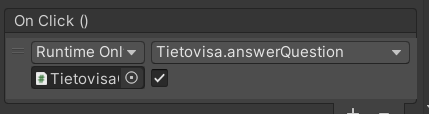

Tietovisa
Tehtävän kuvaus
Tarkoituksena on laatia tietovisa joka lukee kysymykset csv-tiedostosta. Tiedostossa on kysymyksiä jotka ladataan pelille. Käyttäjälle esitetään kysymyksiä yksitellen kunnes vastaamiseen käytettävissä oleva aika tulee täyteen. Lopuksi kerrotaan montako vastausta oli oikein ja vastausprosentti (oikeat / kysymykset).
Pelin päättäminen
Kun peli päättyy pyydetään pelaajalta nimimerkki ja tallennetaan pisteet tiedostoon. Lopputuloksissa näytetään kymmenen parasta tulosta (nimimerkki, tulos ja päiväys).
Mitä on tarkoitus tehdä?
- Laadi käyttöliittymä pelillesi: mieti mitä Text ja Button -ohjaimia tarvitset pelillesi.
- Laadi csv-tiedosto pelin kysymyksille. Tässä vaiheessa riittää että sinulla on muutamia (3-5) kysymystä mietittynä valmiiksi. Tässä vaiheessa on oleellista miettiä mistä tiedetään mikä vastaus on oikea.
- Olisivatko kysymykset aina kyllä / ei -tyyppisiä?
- Olisiko kysymykseen esimerkiksi kolme vaihtoehtoa joista pitää vastata oikeaan?
- Laadi luokka joka edustaa yhtä kysymystäsi. Esimerkiksi
class Question. - Kysymysten lataaminen tiedostosta (esim.
LoadQuestions()): tee aliohjelma joka hakee kysymykset listalle. EsimerkiksiList <Kysymys> listKysymykset;. Tätä aliohjelmaa tulisi kutsua Start()-metodissa.- Lisää tällä kertaa
List <Question>listQuestions;luokan attribuutiksi jotta se näkyy kaikille aliohjelmille.
- Lisää tällä kertaa
- Yhden kysymyksen näyttäminen (esim.
SetQuestion()): laadi aliohjelma joka näyttää yhden satunnaisen kysymyksen listastasi. Tätä pitäisi kutsua Start()-metodissa (ja uudestaan kun käyttäjä vastannut oikein/väärin). - Vastaaminen: kun nappia painetaan niin vastasiko pelaaja oikein vai väärin? Pisteiden kasvattaminen ja uuden kysymyksen näyttäminen (
SetQuestion())
Ohjeita
UI-ohjaimet
- Lisää ohjaimet yhdelle tai useammalla Canvas-objektille. Käytä Scale-attribuuttia skaalatessasi koko Canvas-objektin sopivan kokoiseksi.
- Hover-väri: kokeile painikkeen Highlighted-väriä
- Kokeile tehdä pelin ulkoasusta fonttien ja värien avulla tyylikäs. Kannattaa miettiä voitko esimerkiksi hyödyntää vastavärejä tms. työssäsi.
Painikkeen toiminto
Kun haluamme tietää mitä painiketta on painettu niin lisätään aliohjelmalle mukaan parametrina arvo (true/false tai vaihtoehdon numero).
public void answerQuestion(bool btn) {
Debug.Log("Painettu: " + btn);
}
Aseta Kyllä-painikkeelle arvoksi editorissa true ja Ei-painikkeelle false.

Timer
Tässä skripti esimerkki ajanotosta. Tämä skripti päivittää Text-objektille nykyisen ajan näkyviin.
using System.Collections;
using System.Collections.Generic;
using UnityEngine;
using UnityEngine.UI;
using System;
using TMPro;
public class TimerScript : MonoBehaviour
{
public TMP_Text txtTime;
public float currentTime = 0f;
public float startingTime = 10f;
void Start()
{
currentTime = startingTime;
}
void Update()
{
currentTime -= 1 * Time.deltaTime;
txtTime.text = "Time: " + Math.Round(currentTime);
}
}
Käytetty lähde: Countdown Timer In Unity - Easy Beginners Tutorial/ Guide